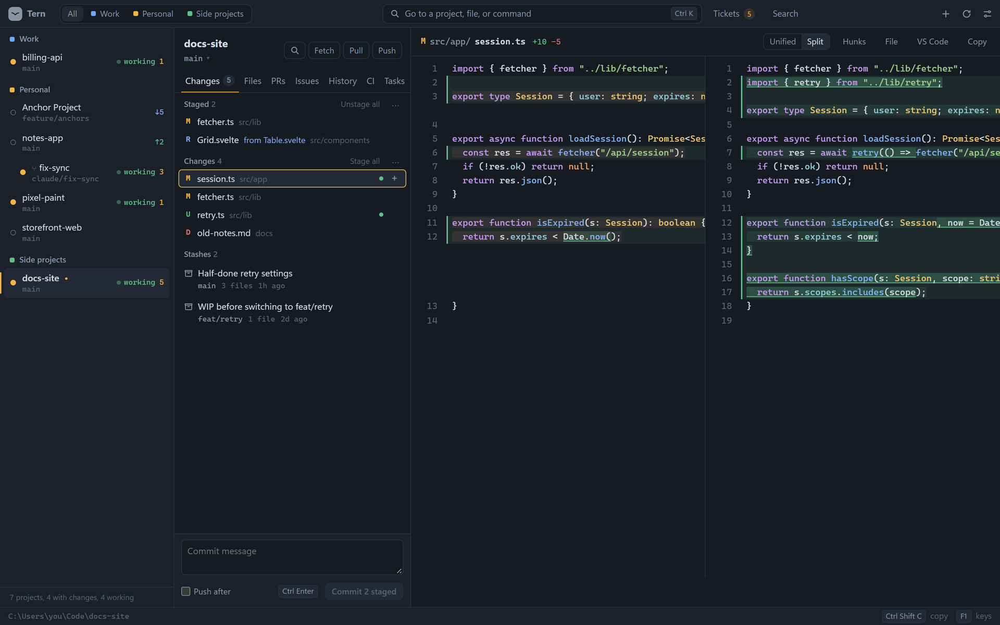
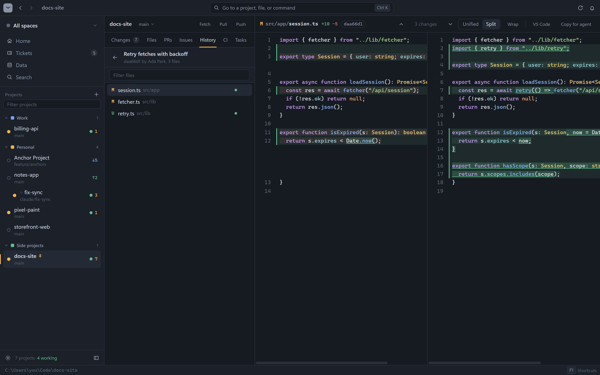
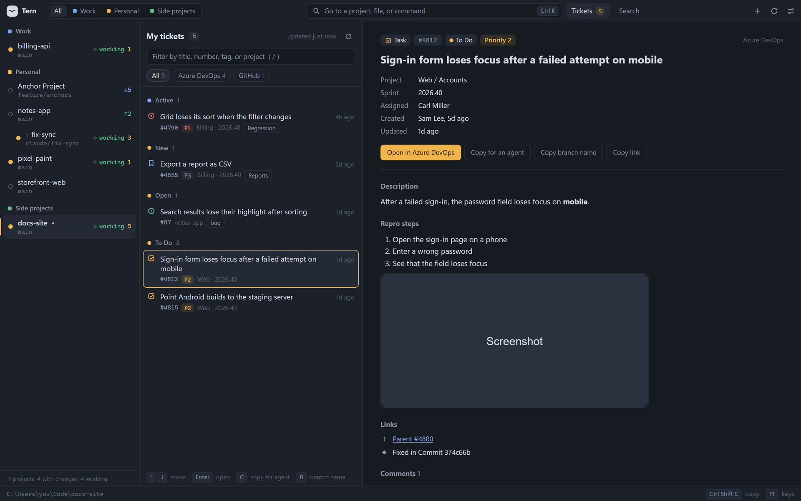
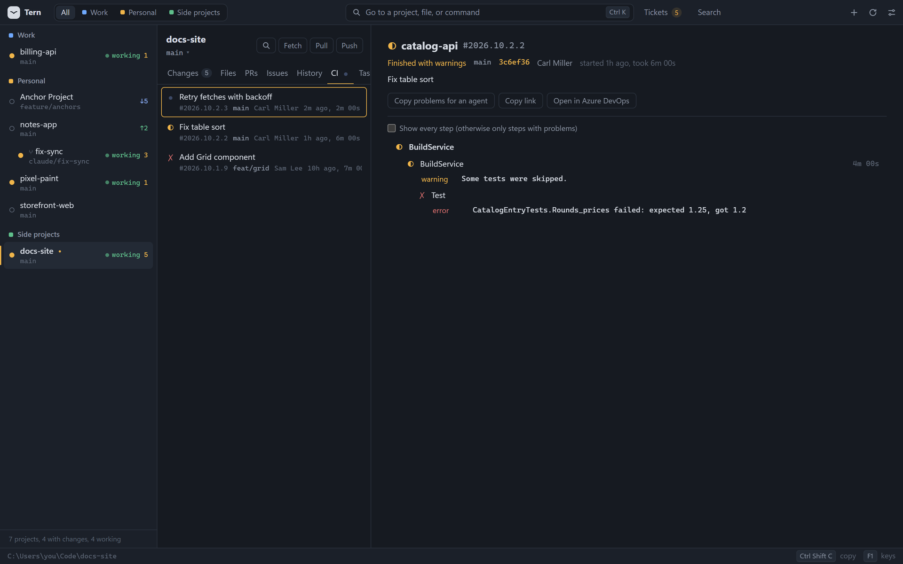
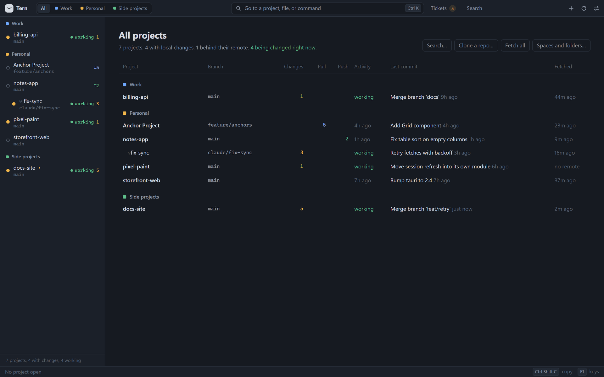

Review every repo your agents touch.
Tern is a fast, keyboard-first app for watching many git repos at once. Read diffs, check CI, pull and push, and hand exact file paths back to your agents, without opening a single editor window.
Free for individuals and small teamsWindows, macOS, LinuxAbout a 2 MB download

Built for the review loop
When agents write the code, your work moves from typing to reviewing. Tern keeps that loop in one window, with every step one keystroke away.
-
01
Watch
Every repo and worktree in one list. Repos an agent is changing show working, and Tern tells you when they go quiet.
Alt ↑ ↓ -
02
Review
Step through changed files with the arrow keys. Split or unified diffs, or everything a branch did since main.
↑ ↓ Ctrl D -
03
Hand off
Copy a path with line numbers, an
Ctrl Shift C@mention, a diff, a failing CI step, or a ticket, ready to paste to an agent. -
04
Ship
Stage, commit, and push. Pull and push always show you the commits first, and warn before you push to main.
S Ctrl Enter
History that knows what you're missing
A commit graph with branches and tags, and the commits on the remote that you haven't pulled yet, right above your branch.
- Long runs of new commits fold into one row
- Review everything a pull would bring as one diff
- Reloads on its own when a branch moves

Your tickets, next to your code
Azure DevOps work items and GitHub issues assigned to you, grouped by state, with the description, repro steps, linked commits, and images.
- Copy a ticket as plain text for an agent
- Copy a branch name like
bug/4790-grid-loses-its-sort - Read only: Tern never changes a ticket

CI without the browser tab
Pipeline runs from Azure DevOps and GitHub Actions, with the stage, job, and step that failed, and its error.
- Running pipelines refresh on their own
- The status bar tells you when one finishes
- Copy the failing steps for an agent in one click

Every project at a glance
Group repos into spaces like Work and Personal. See what changed, what's behind, and what's being worked on, across all of them.
- Fetch, pull, or push many repos at once
- Worktrees fold under their repo
- Twelve themes, dark and light

And the rest of the toolbox
Everything a review session needs, and nothing a code editor would add on top.
.md files as a rendered page, from Tern or straight from your file manager.Keyboard first, mouse friendly
Every action has a shortcut. Press F1 in Tern for the full list.
| Ctrl K Ctrl P Ctrl Shift P | Go to a project, a file, or a command |
| Ctrl Shift F | Search across repos |
| ↑ ↓ | Step through changes; each one opens as you move |
| Ctrl Shift C | Copy a path, path with lines, @mention, or diff |
| S Ctrl Enter | Stage, then commit |
| Ctrl B | Branches and worktrees |
| Ctrl Shift T | Your tickets |
| Ctrl ` | A terminal in this project |
| F12 Shift F12 | Go to definition, or find where it's used |
Download
Pick the file for your system on the latest release.
| System | File |
|---|---|
| Windows | Tern_x64-setup.exe or .msi |
| Windows on ARM | Tern_arm64-setup.exe |
| macOS, Apple Silicon | Tern_aarch64.dmg |
| macOS, Intel | Tern_x64.dmg |
| Linux x64 | .AppImage, .deb, or .rpm |
| Linux ARM64 | .AppImage, .deb, or .rpm (arm64) |
xattr -dr com.apple.quarantine /Applications/Tern.app in Terminal.gh for GitHub or az for Azure DevOps if you use them. Tern reuses their sign-ins.Small on purpose
Tern is built with Tauri 2, Rust, Svelte, and CodeMirror. It uses your system's web view, so the app stays tiny.
- Starts in under a second; tabs load only when you open them.
- Runs git so it never blocks an agent using the same repo.
- No accounts, no cloud, no telemetry. Sign-in stays with
ghandaz. - No plugins or language servers to set up.
Build it yourself
You need Node.js and Rust.
# clone and run git clone https://github.com/Car-Role/tern cd tern npm install npm run app # an installer for your system npm run release